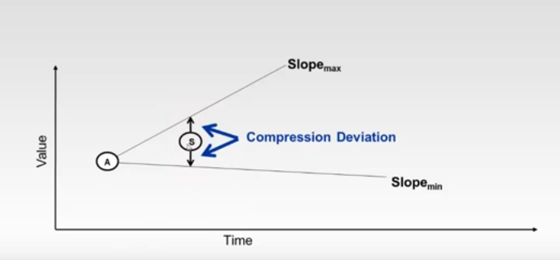
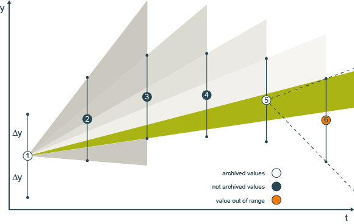
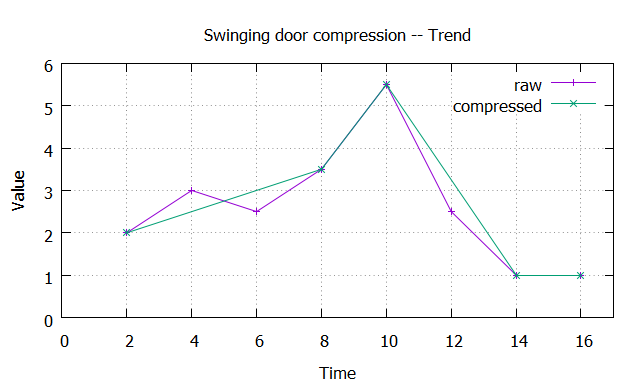
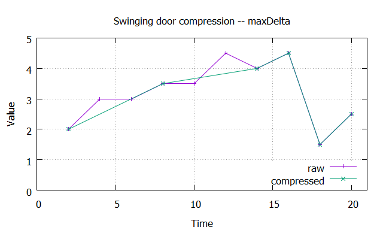
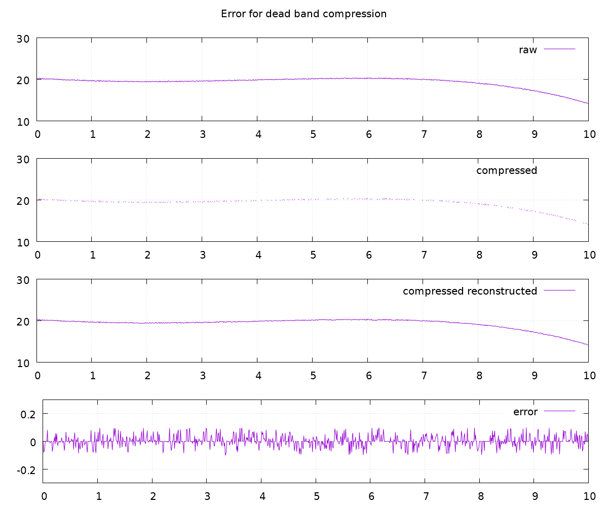

Swinging Door
[TOC]
Purpose
Data reduction by using the swinging door algorithm.
Description

Beginning at the last archived value (1) and the next snapshots (2, 3, ...) a swinging door is constructed, that is only allowed to close and not to open. Green area in the figure below.

When an incoming value (6) lies outside the allowed aread, so the last snapshot and the new value get stored. Therefore maintaining the trend in the data.
Parameters
| Name | Description |
|---|---|
| CompDev | (absolut) compression deviation |
| ExMax | length of x/time before for sure a value gets recoreded |
| ExMin | length of x/time within no value gets recorded (after the last archived value) |
Examples
Trend

Max Delta

Error and Statistics

| Data | # datapoints | average | sigma | skewness | kurtosis |
|---|---|---|---|---|---|
| raw | 1000 | 19.2854 | 1.2968 | -2.1689 | 7.0397 |
| compressed | 418 | 19.2833 | 1.2984 | -2.1682 | 7.0428 |
As can be seen statistics didn't change significantally, but the count of recorded datapoints was reduced -- by filtering noise -- by 58%.